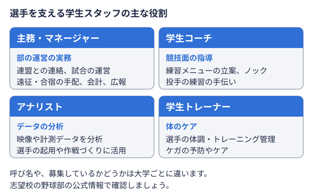

キャリアガイド 2026-11-02
大学野球部OBのネットワークは転職にどう活きる？OB会・紹介ルートの使い方とマナー
大学野球部を引退してしばらく経ち、転職を考えたときに「同じ部のOB・OGに相談したいが、どう声をかければいいか分からない」と感じる方は少なくありません。東京六大学野球連盟・東都大学野球連盟のように歴史の長いリーグでは、卒業生が幅広い業界・企業に在籍しており、OB会やOBネットワークは転職活動での情報収集・紹介のルートになり得ます。この記事では、野球部のOBネットワークを転職でどう活用すればよいか、進め方とマナーの両面から解説します。
野球部のOBネットワークが転職で活きる理由
「同じ部を経験した」という共通点が話を早くする
初対面の社会人に相談する場合と比べ、同じ野球部を経験したOB・OG同士では、練習の厳しさや大会の雰囲気といった前提を省略して話を始められます。この共通点があることで、業界や会社の実情について本音に近い話を聞きやすくなるのが、OBネットワークを使う最大の利点です。
歴史の長いリーグほどOBの層が厚い
東京六大学野球連盟（早稲田・慶應義塾・明治・法政・立教・東京大学の6校）や東都大学野球連盟（1部から4部までの階層制）は創設から長い年月が経っており、卒業生の数も多いリーグです。その分、金融・商社・メーカー・メディアなど幅広い業界にOB・OGが在籍しており、「この業界の話を聞きたい」という目的に対して該当するOBを見つけやすい土壌があります。
OBネットワークを転職活動に使う3つの入り口
OB会の名簿・連絡網から探す：多くの部にはOB会があり、名簿や連絡網、懇親会を通じてOB同士がつながっています。主務マネージャーの代表にあたる部員。連盟や大学との連絡窓口になり、リーグ戦の運営や合宿の準備なども受け持つ。 
同期・先輩後輩の個人的なつながりから探す：OB会という組織を介さず、同期や直接の先輩後輩といった個人的な関係から情報をたどる方法もあります。SNSや引退後も続く付き合いの中で相談できる相手がいれば、まずはそこから話を広げていくのが自然です。
現役部員・部の活動を通じて自然に機会が生まれる場合もある：OB会の集まりや合宿の手伝いなど、引退後も部に関わり続けるOBは多くいます。こうした場での近況報告が、結果としてキャリアの相談に発展することもあります。
OBに相談・紹介を依頼するときのマナー
OBネットワークは、先輩後輩の関係や部という共同体への信頼の上に成り立っています。自分の転職活動のために性急に利用しようとすると、OB会全体の信頼を損ねてしまうこともあるため、次の点に注意しましょう。
- 依頼の目的を最初に明確に伝える：「情報を聞きたいだけ」か「紹介してほしい」のかを曖昧にしない
- 相手の時間をもらっていることを意識する：日程調整は相手に合わせ、休日や業務時間外の時間を前提にしない
- 紹介してもらった後の経過を必ず報告する：選考結果を報告しないまま次の依頼をしない
- 一度の依頼で複数のOBに同じ内容を頼まない：狭いコミュニティでは同じ依頼が広がると負担感が大きくなる
社員が知人を推薦する「リファラル」採用の仕組みでは、紹介した側が候補者のその後の働き方まで一定の責任を感じやすいとされています。OBネットワークでの紹介も同じで、紹介者の立場を気遣う姿勢が、長期的には自分自身の評判にもつながります。
OBネットワークだけに頼らない情報収集も組み合わせる
OBネットワークは有力な情報源ですが、在籍していた部やリーグの規模によっては、希望する業界・会社のOBが必ずしも見つかるとは限りません。東京六大学野球 秋季リーグ順位表や東都大学野球1部 秋季リーグ順位表からも分かるように、六大学と東都では部の規模や歴史の長さに違いがあり、それがOBの人数や業界のばらつきにもつながっています。OBネットワークで得られる情報は一つの視点として受け止め、転職エージェントや企業研究など他の手段と組み合わせることが、納得のいく転職活動につながります。
まとめ
大学野球部のOBネットワークは、同じ部を経験したという共通点を土台に、業界や会社の実情を本音で聞きやすい貴重な情報源です。一方で、OB会の名簿や先輩後輩の関係は転職のために作られたものではないため、依頼の目的を明確に伝え、紹介後の報告を欠かさないといったマナーを守ることが欠かせません。OBネットワークを情報収集の一つの手段として活用しながら、他の情報源とも組み合わせて転職活動を進めていきましょう。
出典
体育会出身の転職・キャリア相談
OB・OG向けのキャリア相談。
オフシーズン・引退後に、長期インターンという選択
部活で培った力を実務で試す。16タイプ診断（30秒）で合う企業がわかります。